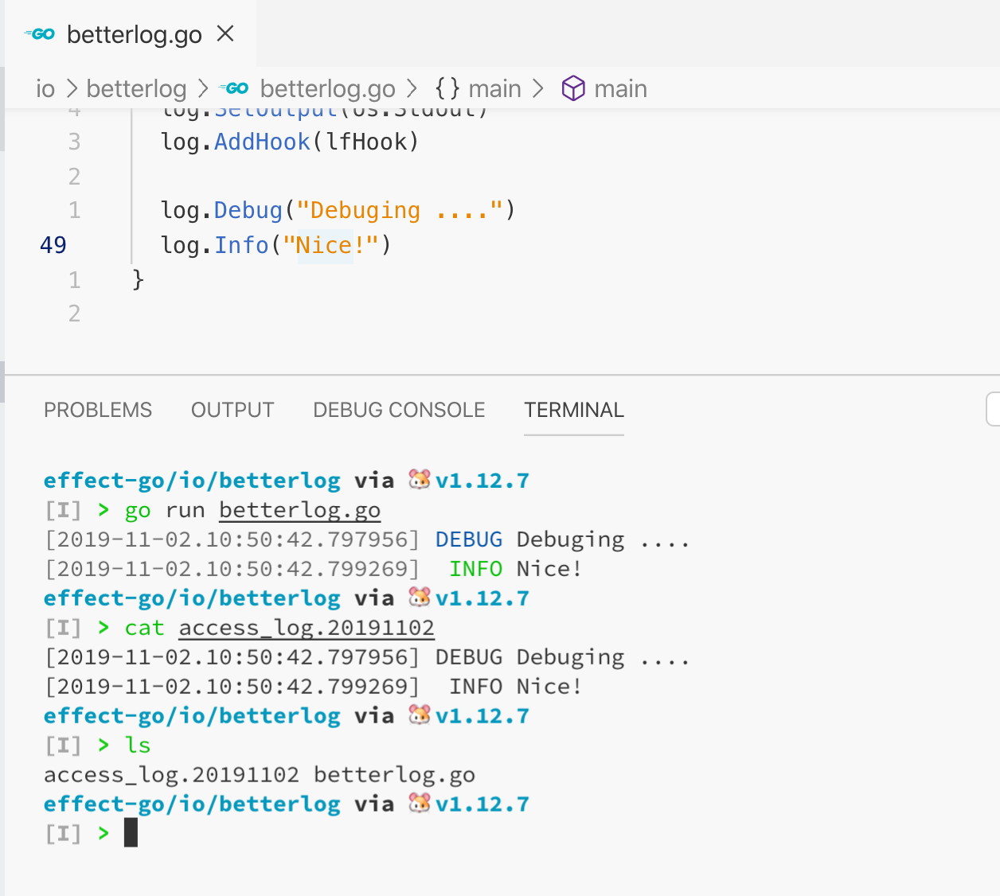

如果有一个需求，在使用 logrus 写日志的时候既希望将其写到标准输出流，也希望将其写到文件中，怎么实现呢？
环境及依赖信息
- macOS v10.15.1
- Go v1.12.7
- github.com/sirupsen/logrus v1.4.2
- github.com/x-cray/logrus-prefixed-formatter v0.5.2
- github.com/lestrrat-go/file-rotatelogs v2.2.0
低配版
如果输出的格式没有区别的话，直接使用标准库的 io.MultiWriter 即可，测试代码如下
1
2
3
4
5
6
7
8
9
10
11
12
13
14
15
16
17
18
19
| package main
import (
"fmt"
"io"
"os"
rotatelogs "github.com/lestrrat-go/file-rotatelogs"
log "github.com/sirupsen/logrus"
)
func main() {
logPath, _ := os.Getwd()
logName := fmt.Sprintf("%s/access_log.", logPath)
r, _ := rotatelogs.New(logName + "%Y%m%d")
mw := io.MultiWriter(os.Stdout, r)
log.SetOutput(mw)
log.Info("something ....")
}
|
高配版
那如果希望两者的输出格式不同呢？比如说输出到 stdout 中的是有颜色的，但是写到文件中的是没有颜色的。此时就要用到 logrus 的 hook 了，代码如下
1
2
3
4
5
6
7
8
9
10
11
12
13
14
15
16
17
18
19
20
21
22
23
24
25
26
27
28
29
30
31
32
33
34
35
36
37
38
39
40
41
42
43
44
45
46
47
48
49
50
| package main
import (
"fmt"
"os"
"github.com/rifflock/lfshook"
rotatelogs "github.com/lestrrat-go/file-rotatelogs"
log "github.com/sirupsen/logrus"
prefixed "github.com/x-cray/logrus-prefixed-formatter"
)
var stdFormatter *prefixed.TextFormatter
var fileFormatter *prefixed.TextFormatter
func init() {
stdFormatter = &prefixed.TextFormatter{
FullTimestamp: true,
TimestampFormat: "2006-01-02.15:04:05.000000",
ForceFormatting: true,
ForceColors: true,
DisableColors: false,
}
fileFormatter = &prefixed.TextFormatter{
FullTimestamp: true,
TimestampFormat: "2006-01-02.15:04:05.000000",
ForceFormatting: true,
ForceColors: false,
DisableColors: true,
}
log.SetFormatter(stdFormatter)
log.SetLevel(log.DebugLevel)
}
func main() {
logPath, _ := os.Getwd()
logName := fmt.Sprintf("%s/access_log.", logPath)
writer, _ := rotatelogs.New(logName + "%Y%m%d")
lfHook := lfshook.NewHook(lfshook.WriterMap{
log.InfoLevel: writer,
log.DebugLevel: writer,
log.ErrorLevel: writer,
}, fileFormatter)
log.SetOutput(os.Stdout)
log.AddHook(lfHook)
log.Info("something ....")
}
|
测试结果如下:
